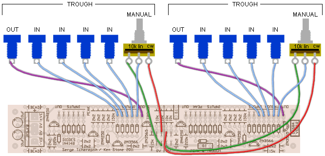

|
This module is a variation on the 1973 Classic Serge Peak and Trough module. It is much like the Analog Logic Peak and Trough, though a little less precise. It is presented here for those who want to build themselves a classic Serge. There are two of each of the Peak and Trough modules on the PCB, each having an additional input for use with a manual level pot. The second of each has additional inputs to allow for the unit to be built on an eight row panel instead of the original six row panel. A little additional circuitry has been added to remove the unit's dependence on a +6 volt power rail. Both the Peak and Trough operate in the range of 0V to half of the positive power rail, i.e. 6V on a 12 volt system, and 7.5 volts on a 15 volt system, though in practice, you may find the Trough section does respond to input voltages going a volt or two below 0V. A little on how it works:
The Peak module is effectively a diode OR gate. An emitter follower (the lower transistor) is used to cancel out the voltage drop of the input diodes. The upper transistor is a constant current sink acting as a pull-up. The Trough module is the reverse of the Peak, based around a diode AND gate, again with an emitter follower (upper transistor) compensating for the voltage drop across the input diodes, and a current source acting as a pull-down.
Construction
Before you start assembly, check the board for etching faults. Look for any shorts between tracks, or open circuits due to over etching. Take this opportunity to sand the edges of the board if needed, removing any splinters or rough edges. When you are happy with the printed circuit board, construction can proceed as normal, starting with the resistors and diodes first, followed by the taller components. Take particular care with the orientation of the polarized components, such as electrolytics, diodes, and transistors. The schematic, overlay and parts lists all specify the transistors originally used by Serge. They are not critical. BC547 and BC557 can be used directly, or 2N3904 and 2N3906 can be used if they are soldered in with their package backwards with respect to the overlay. Any general purpose silicon transistors should work in this circuit. Each of the four sub modules work independently, so you can omit the parts associated with any sub module you do not need. For example, if you only need a single Peak and a single Trough function, all part to the right of the center line can be omitted. It would be possible to cut the board along this line too, to use the second part of the board elsewhere, but if you do, you will need to arrange your own power connections for the second part of the board.

Set UpThere is no setup required Notes:
Parts list This is a guide only. Parts needed will vary with individual constructor's needs. If anyone is interested in buying these boards, please check the PCBs for Sale page to see if I have any in stock. Can't find the parts? See the parts FAQ to see if I've already answered the question. Also see the CGS Synth discussion group.
Article, art & design copyright 2011 by Ken Stone
| |||||||||||||||||||||||||||||||||||||||||||||||||